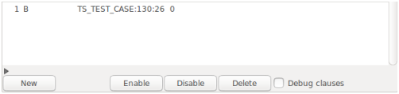

The Breakpoints part is available only if the debugger is used as runtime analyser (otherwise, the part is hidden). The part consists of a table showing all defined breakpoints and a row of buttons.

Figure 3: The Breakpoints part.
The columns of the table have the following meaning, most of them denote restricting conditions: the breakpoint becomes active when all specified conditions are satisfied (an empty field means True).
The Type condition may be used to make the expressions in the If and Print columns valid (the Current object is the starting point for evaluation). More complex is the interaction of the Catch and At conditions. If both are specified then they work together in the following manner: the condition is satisfied if the rescue clause of the routine enclosing the At location will catch the exception. In any case (At specified or not), the program point shown in the Source and Call stack parts is the point where the exception occurs, not that of a rescue clause catching the exception, in particular, not the At location.
Breakpoints may (and should!) be edited. To this end, clicking the right mouse button on a field in the table starts an editing cycle for this field. According to the column type the “editor” is as follows.
The editors have been chosen such that most input errors can be avoided. Unfortunately, in case of At and Watch conditions one has to work in two parts of the graphics, first in the Source or Data part to select the interesting location or variable and then in the Breakpoints part to apply it.
HintFor convenience, there is also the possibility to set and remove breakpoints directly in the Source part, see Sec. 3.5.5.
A new breakpoint without any conditions is created by clicking button New. One or more breakpoints may be selected by singly left clicking (or selected and deselected when also the Control key is pressed). The set of selected breakpoints will be enabled, disabled, or deleted when clicking the corresponding buttons. Finally, the Debug clauses check button controls whether debug clauses in the Eiffel code are to be treated like breakpoints.